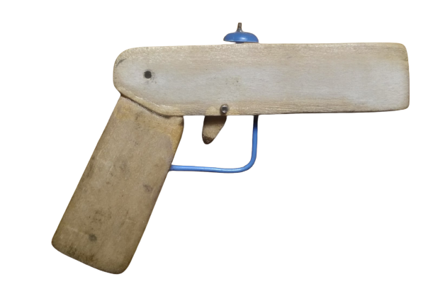

Саморобки:
- Міні пістолет
- Радіокерована машинка
Міні пістолет
Опис:
Виготовлений з однієї дерев'яної лінійки завдовжки 20 сантиметрів і, незважаючи на розмір у 7,5
сантиметрів,
може стріляти.


Радіокерована машинка
Опис:
Корпус
Виготовлений з алюмінієвих трубок і профілей, скріплених між собою за допомогою холодної зварки.
Загальна довжина використаних трубок і профілей: приблизно 2,7 м.
Вага: 315г.
Електрика
В якості плати керування використовувався бездротовий 4х канальний передавач на базі чіпу SC2272-M4.
Мотори: двох-осьовий двигун з редуктором 1:48. Драйвер для моторів: модуль mini-L298N H-мост на 9В.
Увага!
-
Передавач і мотори мають працювати від різних джерел живлення. Для передавача можна
використовувати батареки. Для
моторів обов'язково акамулятор.
-
До приймача обов'язково треба припаяти антену довжиною 23,8 см.
Товщина дроту не має бути великою. Як варіант, використити одну жила від інтернетного
кабелю.
Щоб антена не була помітна її можна змотати в спіраль діаметром 4,5мм і довжиною 26мм.